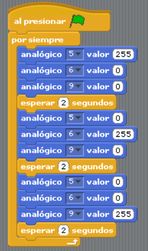
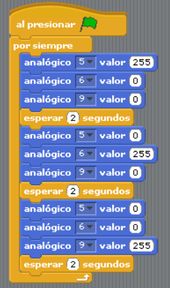

Señales Digitales y Analógicas en S4A
Cuando trabajamos con S4A es importante distinguir entre los dos tipos de señales que podemos usar para controlar nuestros circuitos: digitales y analógicas.
Definición
- Señal digital: solo tiene dos estados posibles: encendido (1) o apagado (0). Ejemplo: un LED que está prendido o apagado.
- Señal analógica: puede variar en un rango de valores, en S4A de 0 a 255. Ejemplo: un LED que puede iluminarse con poca, media o mucha intensidad.
Diferencias principales
| Característica | Salida Digital | Salida Analógica |
|---|---|---|
| Estados posibles | Dos (0 o 1) | 256 niveles (0 a 255) |
| Ejemplo | LED encendido/apagado | LED con brillo gradual |
| Puertos en S4A | Del 10 al 13 | 5, 6 y 9 |
Ejemplos cotidianos
- Interruptor de luz → digital (prendido o apagado).
- Control de volumen → analógico (sube o baja gradualmente).
Ejercicio N° 1: LED gradual
Objetivo: Encender un LED variando su intensidad desde apagado hasta el máximo brillo.
- Conectar un LED en el pin analógico 9.
- Programar primero con valores fijos (50, 100, 150, 200, 255).
- Mejorar el código usando una variable que vaya aumentando automáticamente en un bucle.
Ejercicio N° 2: LED RGB
Objetivo: Combinar los tres colores (rojo, verde y azul) para generar diferentes tonos.
- Conectar el LED RGB a los pines 5, 6 y 9.
- Encender en orden: rojo, verde y azul, cada uno por 2 segundos.
- Explorar combinaciones (ejemplo: rojo + verde = amarillo, rojo + azul = magenta).
 

Práctica N° 2:
Objetivo: Conectar y programar hasta 7 LEDs combinando salidas digitales y analógicas.
Ideas de proyectos:
- 🚦 Semáforo peatonal con luz de autos y de peatones.
- 🚗 Auto con luces delanteras, traseras e intermitentes.
- 🛫 Pista de aterrizaje con LEDs encendiéndose en secuencia.
- 🎆 Juego de colores con LED RGB y LEDs simples.
- 🏙 Alumbrado urbano con distintos niveles de intensidad.
Descargar formato de Práctica 2